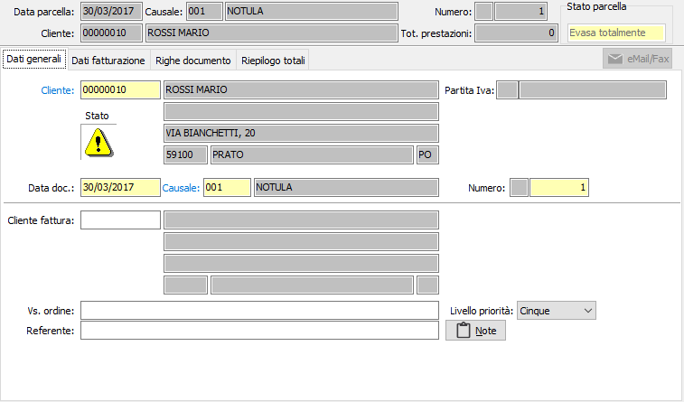

Dati generali
All’inizio di un nuovo documento il cursore è posizionato sul campo cliente della linguetta dati generali, da cui inizia l’inserimento.

CLIENTE: codice alfanumerico di 8 caratteri, presente in anagrafica clienti, che individua il cliente da trattare. Sul campo, la cui compilazione è obbligatoria, sono attive le funzioni di ricerca (F9) ed accesso rapido alla tabella (CTRL+W) per eventuali nuovi inserimenti o variazioni. Dopo aver selezionato il codice del cliente vengono visualizzati, senza possibilità di modifica, la ragione sociale e l’indirizzo dello stesso. Se presente nella linguetta preferenze dell’anagrafica cliente, viene anche compilato automaticamente il successivo campo causale con la causale esistente in anagrafica.
DATA DOCUMENTO: campo data in cui viene visualizzata la data di sistema, modificabile dall’utente.
CAUSALE: codice alfanumerico di 3 caratteri presente nella tabella Causali Pro forma che definisce la tipologia del documento in esame. Se, presente, viene visualizzata la causale esistente nelle preferenze dell’anagrafica del cliente in esame, modificabile dall’utente. Sul campo sono attive le funzioni di ricerca (F9) ed accesso rapido (CTRL+W) sulla tabella stessa.
NUMERO: campo numerico che contiene il numero progressivo del documento. Viene completato automaticamente dal programma in base alla serie contenuta dalla causale. E’ modificabile dall’utente.
CLIENTE FATTURA: codice alfanumerico di 8 caratteri, presente in anagrafica clienti, che individua l’eventuale cliente, diverso da quello a cui è intestato il documento, a cui deve essere intestata la parcella. Sul campo sono attive le funzioni di ricerca (F9) ed accesso rapido (CTRL+W) sulla tabella stessa. Confermando il codice del cliente vengono visualizzati, senza possibilità di modifica, la ragione sociale e l’indirizzo dello stesso.
VOSTRO ORDINE: campo alfanumerico per l’eventuale descrizione degli estremi dell’ordine del cliente.
REFERENTE: campo alfanumerico per l’eventuale descrizione del referente del cliente. Se presente, viene proposto automaticamente il referente presente nell’anagrafica del cliente intestatario del documento, modificabile. Sul campo sono disponibili le funzioni di ricerca (F9) sui contatti eventualmente presenti sull'anagrafica.
NOTE GENERALI: campo note per eventuali note di testa documento, stampabili sul modulo pro forma se la personalizzazione di stampa lo prevede.
LIVELLO DI PRIORITÀ: indicare il livello di priorità che il documento riveste. Questo campo indica la priorità in relazione agli altri documenti presenti.
CODICE PROGETTO: Codice alfanumerico di 15 caratteri che definisce il progetto di riferimento. Sul campo sono attive le funzioni di ricerca (F9) ed accesso diretto alla tabella (CTRL+W). Il campo è presente solo se attiva la gestione progetti.
COMMESSA PUBBLICA: Codice della commessa pubblica, sul campo sono attive le funzioni di ricerca (F9) ed accesso diretto alla tabella (CTRL+W). Il campo è presente solo se attiva la gestione della normativa antimafia e se gestita per il tipo documento.